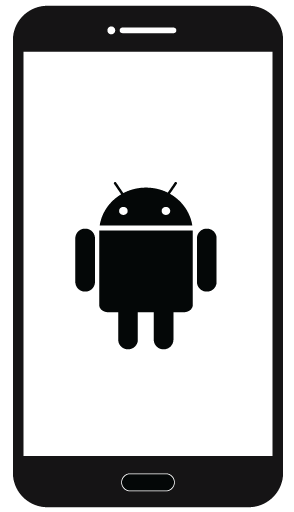

<!--
  Generated template for the StarsPage page.

  See http://ionicframework.com/docs/components/#navigation for more info on
  Ionic pages and navigation.
-->
<!-- 个人中心 -->
<ion-header>

  <ion-navbar>
    <ion-title style="text-align:right;">
        <ion-icon ios="ios-build" md="md-build"></ion-icon>
    </ion-title>
  </ion-navbar>

</ion-header>


<ion-content >
  <ion-row class="pic">
    
  </ion-row>
  <ion-row>
    <div class="col col-30 juzhong">已登录:&nbsp;&nbsp;Android </div>
  </ion-row>
  <ion-row >
    <div class="col col-30 juzhong">设备id:&nbsp;&nbsp;1856869</div>
  </ion-row>
  <!-- <li class="bored"></li>
  <ion-row>
    <div  class="myzhongxin col col-25">
      <ion-icon ios="ios-attach" md="md-attach"></ion-icon>
    </div>
    <div  class="myzhongxin col col-25">
    </div>
    <div  class="myzhongxin col col-25"style="margin-right:6px;">
    </div>
  </ion-row> -->
  <ion-list class="lst">
    <ion-item>
        <ion-icon ios="ios-phone-portrait" md="md-phone-portrait"></ion-icon>
        &nbsp;&nbsp;当前账号设备
    </ion-item>
    <ion-item>
      <ion-icon ios="ios-attach" md="md-attach"></ion-icon>
      &nbsp;&nbsp;我的已绑定设备
    </ion-item>
    <ion-item>
      <ion-icon ios="ios-add-circle" md="md-add-circle"></ion-icon>
      &nbsp;&nbsp;添加设备
     </ion-item>
     <ion-item>
        <ion-icon ios="ios-remove-circle" md="md-remove-circle"></ion-icon>
        &nbsp;&nbsp;删除设备
     </ion-item>
       <div class="tuichu">
          <button ion-button class="btn-" >
              退出当前账号
           </button>
       </div>     
  </ion-list>
     
</ion-content>
